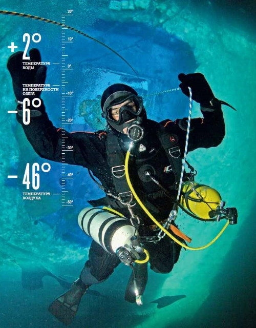
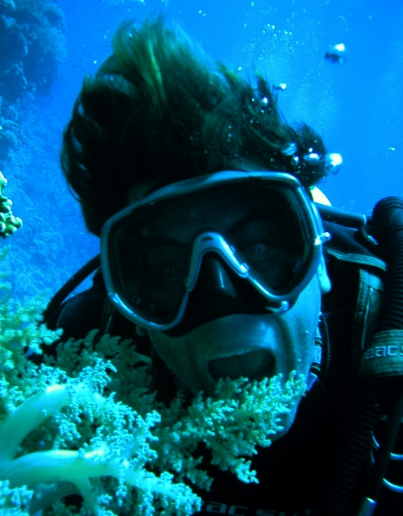
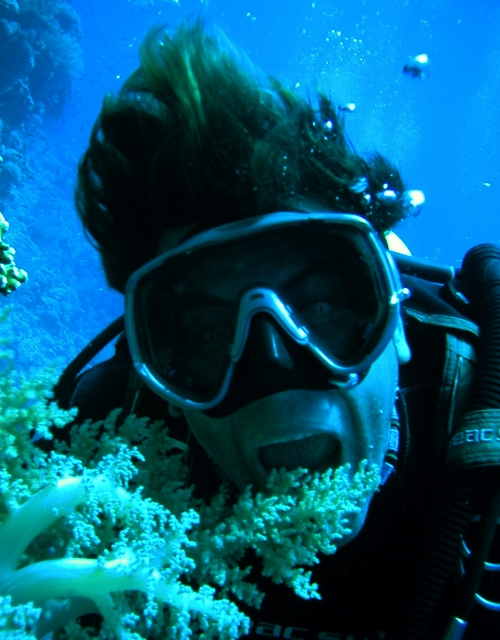

Командор Клуба "Искатели морских сокровищ", сын двух городов-героев Одессы и Севастополя. Незаурядная личность, опытный подводный пловец, человек-легенда, 40 лет профессионально занимается дайвингом.
Виктор начал свою подводную деятельность еще в далекие времена СССР на берегу Черного моря. В 12 лет он совершил свое первое погружение на аппарате "АВМ-3м", первым из всех приятелей отважившись сделать шаг в бездну. После этого его настольными книгами стали: "Десятая флотилия МАС", "Подводные диверсанты", "Немецкие подводные диверсанты во второй Мировой войне", а также "Князь Боргезе" (книга про командира итальянской десятой флотилии МАС).
С 1981 по 1996 годы служил на Военно-морском флоте. Основной деятельностью на службе были водолазные работы (рабочая глубина 200 метров), испытание новых образцов подводной техники, испытание средств передвижения под водой, работа глубоководных комплексов, а также подготовка морских животных (дельфинов). Виктор руководил оперативно-спасательным водолазным отрядом.
Уйдя в запас, имея богатый опыт подводного плавания, Озаренко решает включиться в струю бурно развивающего на территории бывшего Советского Союза любительского дайвинга.
Он становится инструктором PADI, в последующем инструктором-тренером IANTD и NDL.
Сегодня за плечами Виктора более 18 тысяч дайвов в различных условиях погружений и конфигураций снаряжения, более чем 15 летний опыт работы инструктором по дайвингу на Красном, Черном и Средиземном морях, а также водах Антлантического и Индийского океанов.
Виктор Озаренко является инструктором-тренером и курс-директором международных дайверских организаций:
PADI Master Scuba Diver Trainer # 626156, IANTD Trimix Instructor Trainer #666, Tec Gas Blender EANx/ Trimix DSAT, NDL Course Director, Master IDC Tech Instructor
В 2013 году Виктор Озаренко в составе экспедиции Русского географического общества установил рекорд Гиннеса, погрузившись на дно одного из самых холодных водоемов мира – озера Лабынкыр, в самой холодной точке земного шара, в самое холодное время года! Подробности рекорда читайте на странице журнала "Вокруг Света".


 
